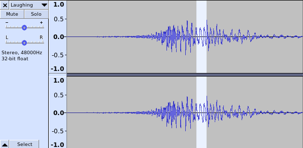

Sound is made by air being squeezed many times very quickly. It usually gets squeezed by things that vibrate very quickly.
Some examples are:When something is vibrating slowly, it makes a low sound, and when vibrating fast, makes a higher sound. When it is slow, it is less frequent, and when fast, it is a higher "frequency".
When something is tighter, it will usually be a higher frequency.
Sound is indicated by the number of times it changes per second. You can hear things as low as about 20 times per second. A voice could be 300 to 3000 times per second. The highest pitches you can hear are around 20000 times per second.
There are programs that can edit sound.
Audacity can show the sound like:

The highlighted area has peaks that are wider so the peaks are not happening as often meaning they are slower. A slower vibration means a lower pitch, so this part of the sound is lower.
The height (both higher and lower) of the peak means how how loud the sound is.
In Audacity, you can experiment with sounds in the Generate menu. Examples are Generate/Chirp or Generate/Tone.
Select a small part of the sound and use View/Zoom to select to see what form of wave there is. A wave is the ripples like on a lake or the ocean.
One interesting point is that a sine wave is a single frequency, and a square wave is sine waves at all frequencies added together.